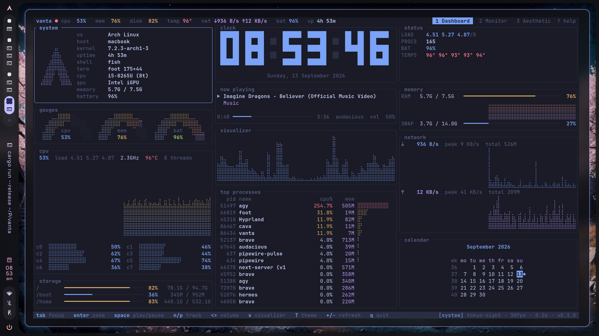
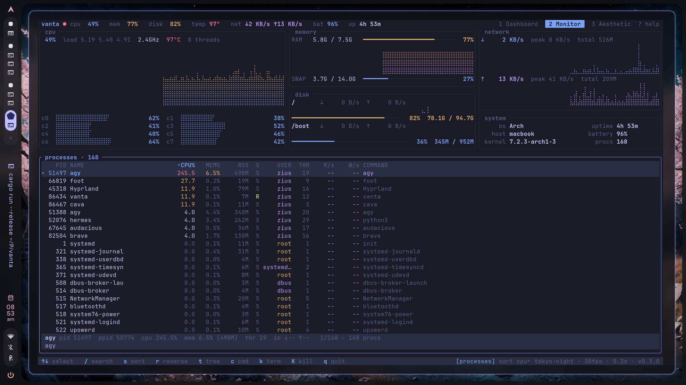
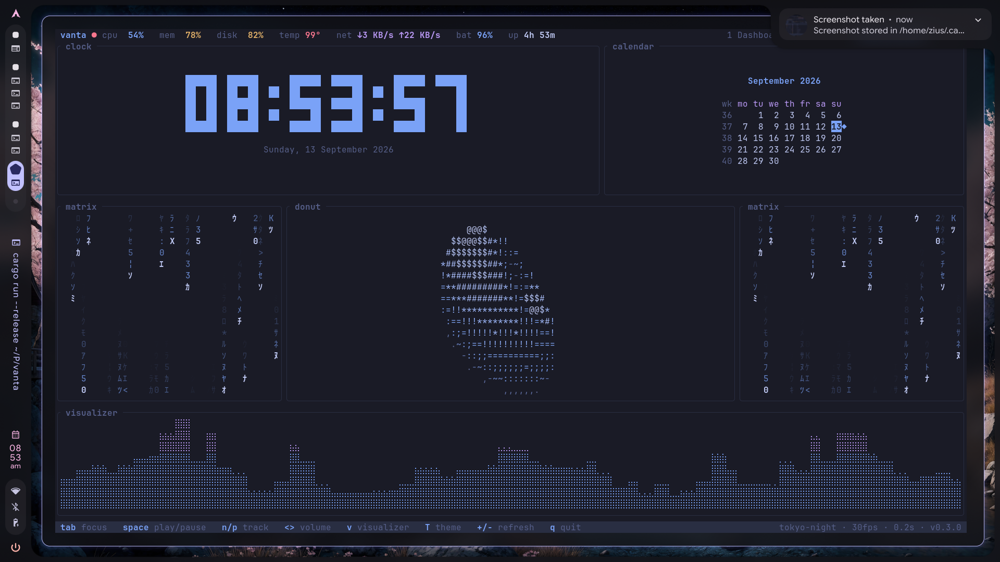
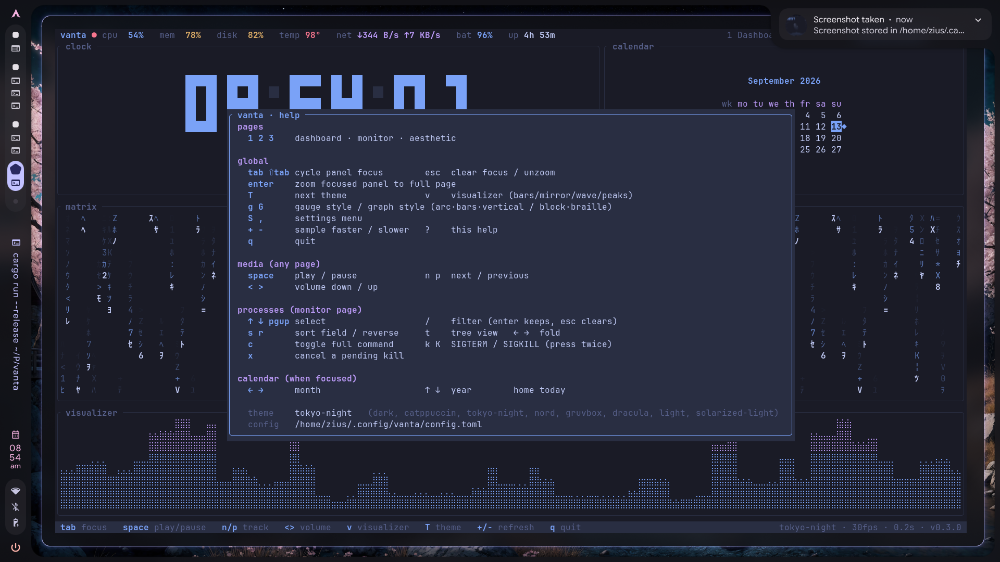

Your machine,
one pane.
Four keyboard-driven modes that turn your terminal into a live cockpit. Zero tabs. Zero mouse. Total control.

The Ultimate Cockpit.
Real-time telemetry meets keyboard mastery across four distinct modes.
Real-time Telemetry
CPU per-core utilisation, temperature, memory, swap, disk I/O, network sparks, and audio spectrum.

Process Explorer
Hierarchical process tree, instant regex search, sort by CPU/MEM, and one-key signals (SIGTERM/SIGKILL).

Matrix, Donut & Pinned Media
Matrix digital rain, ASCII spinning 3D donut, full-width visualizers, and pinned photo/video display.

Zero Mouse, Total Control
Instant HUD overlay with '?', panel zoom with Enter, live theme switcher with 'T', and settings modal with 'S'.
Zero dependencies.
Infinite monitoring.
Sub-millisecond latency
Built in Rust for native performance. It barely registers on its own dashboard. Vanta doesn't consume your system to monitor it.
Workspace Mode
Built-in File Manager, Agenda, Tasks, RSS feeds, and Obsidian vault viewer. Edit directly by pressing E.
Customizable Aesthetic
Beautiful terminal UI with Matrix rain, spinning donuts, and pinned image/video boxes.
Take control today.
No Rust needed — npm fetches a prebuilt binary.
npm install -g @ziuus/vanta
Then run vanta. Building from source instead:
cargo install --git https://github.com/ziuus/vanta